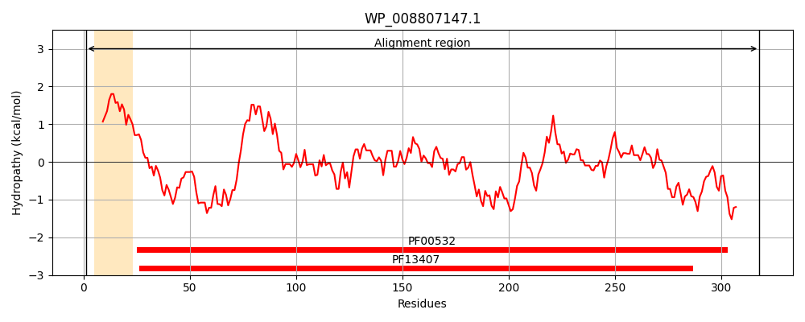
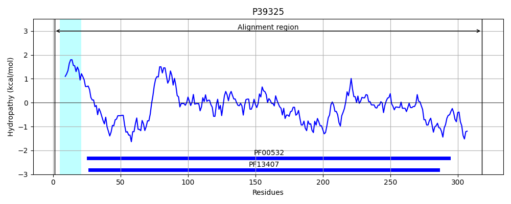

Hit Accession: P39325
Hit TCID: 3.A.1.2.25
Hit Description: gnl|BL_ORD_ID|10257 gnl|TC-DB|P39325|3.A.1.2.25 ABC transporter periplasmic-binding protein YtfQ OS=Escherichia coli (strain K12) GN=ytfQ PE=1 SV=1
Mach Len: 318
e:0.000000
Query TMS Count : 1
Hit TMS Count: 1
TMS-Overlap Score: 0.850000
Predicted Substrates:CHEBI:9840;UDP-sugar
BLAST Alignment:
Score: 1502 , Bit scores: 583 bits, E-value: 0.0e+00, Alignment length: 318, Percentage identity: 92
Query: 1 MWKRLLLVTAVSAAMSSMAIAAPLTVGFSQVGSESGWRAAETSVAKEEAAKRGITLKIADGQQKQENQIKAVRSFIAQGVDAIFIAPVVATGWEPVLKEAKEAKIPVFLLDRSIDVKDKDLYMTTVTANNVLEGQLIGDWLVKTVDGKPCNVVELQGTVGASVAIDRKKGFADAIAKASNIKIIRSQSGDFTRSKGKEVMESFIKAENNGKNICMVFAHNDDMVIGAIQAIKEAGLKPGKDILTGSIDGVPDIYKAMIAGEANASVELTPNMAGPAFDALEKYKKDGTLPEKLTITKSTLYLPDTAKEELEKKKNMGY 318
MWKRLL+V+AVSAAMSSMA+AAPLTVGFSQVGSESGWRAAET+VAK EA KRGITLKIADGQQKQENQIKAVRSF+AQGVDAIFIAPVVATGWEPVLKEAK+A+IPVFLLDRSIDVKDK LYMTTVTA+N+LEG+LIGDWLVK V+GKPCNVVELQGTVGASVAIDRKKGFA+AI A NIKIIRSQSGDFTRSKGKEVMESFIKAENNGKNICMV+AHNDDMVIGAIQAIKEAGLKPGKDILTGSIDGVPDIYKAM+ GEANASVELTPNMAGPAFDALEKYKKDGT+PEKLT+TKSTLYLPDTAKEELEKKKNMGY
Sbjct: 1 MWKRLLIVSAVSAAMSSMALAAPLTVGFSQVGSESGWRAAETNVAKSEAEKRGITLKIADGQQKQENQIKAVRSFVAQGVDAIFIAPVVATGWEPVLKEAKDAEIPVFLLDRSIDVKDKSLYMTTVTADNILEGKLIGDWLVKEVNGKPCNVVELQGTVGASVAIDRKKGFAEAIKNAPNIKIIRSQSGDFTRSKGKEVMESFIKAENNGKNICMVYAHNDDMVIGAIQAIKEAGLKPGKDILTGSIDGVPDIYKAMMDGEANASVELTPNMAGPAFDALEKYKKDGTMPEKLTLTKSTLYLPDTAKEELEKKKNMGY 318 | Protein Hydropathy Plots: |
|---|
|  |  |
Pairwise Alignment-Hydropathy Plot:
|
|---|
 |